A 100% local AI assistant: it runs on your iPhone, on a plane, in the mountains, abroad. What you write never leaves your phone.
Download on the App StoreOne-time purchase · no account · no subscription
Each assistant has its own role and way of answering. Pick the one that helps you, or just talk to the all-round assistant.
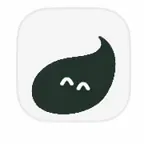
All-round, it answers kindly in your language.
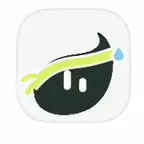
Workouts that fit your time and equipment, week-by-week programmes.
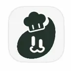
Simple recipes with what you have, allergens flagged.
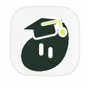
Explains step by step, at your pace: maths, history, science, grammar.
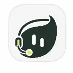
Translate text between 13 languages, right there.
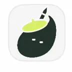
Emails, messages, letters; and spelling fixed mistake by mistake.
Give it a name, a personality and one of Tomesi's 25 icons: an assistant made your way, which also uses the app's reference sheets.
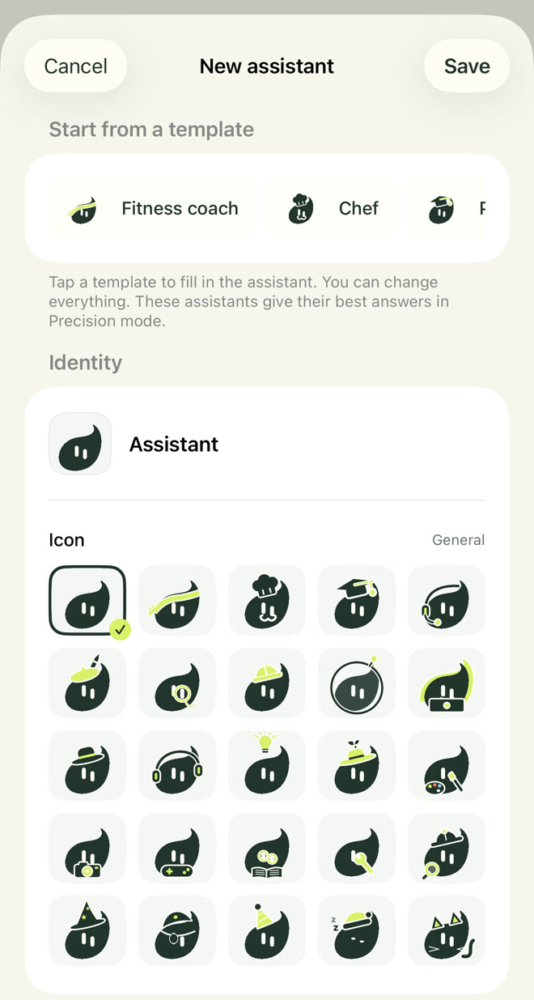
A small model can't know everything. Tomesi carries reviewed reference sheets and gives them to the assistant when it answers.
Quantities, steps and allergens, shown by the app under the answer.
14 countries, plus science, geography and grammar sheets in 14 languages.
And 65 guides: multi-week programmes, recovery, nutrition, sports.
Like any AI, Tomesi can make mistakes: check important information.
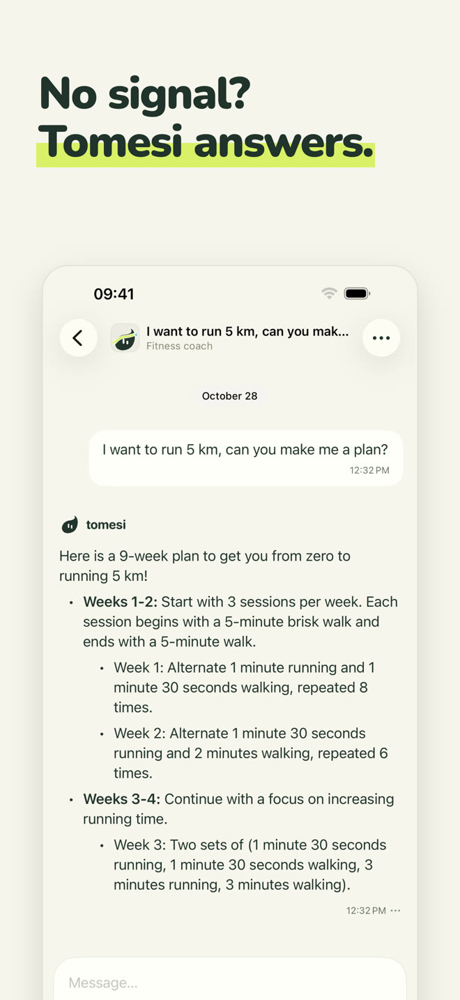
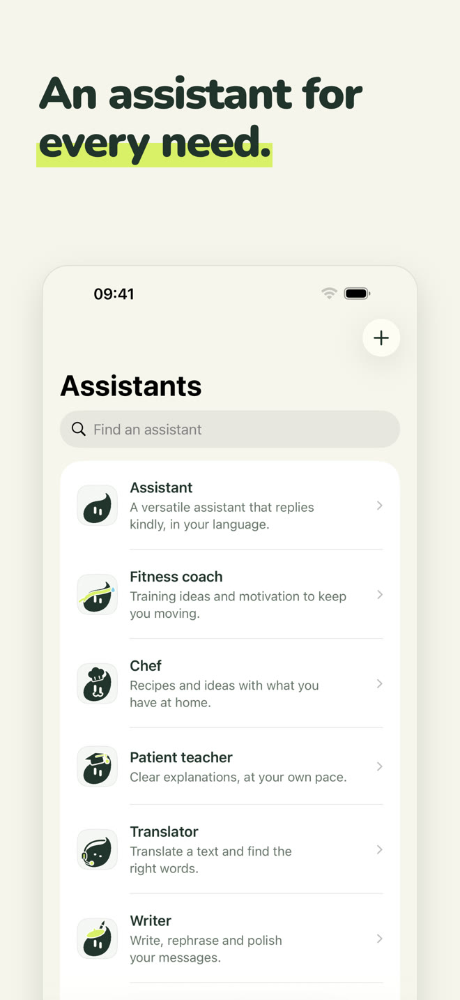
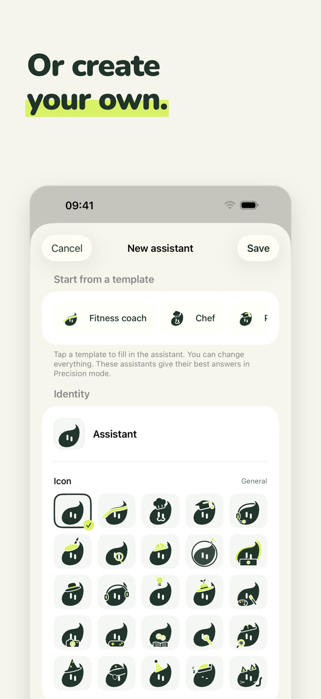
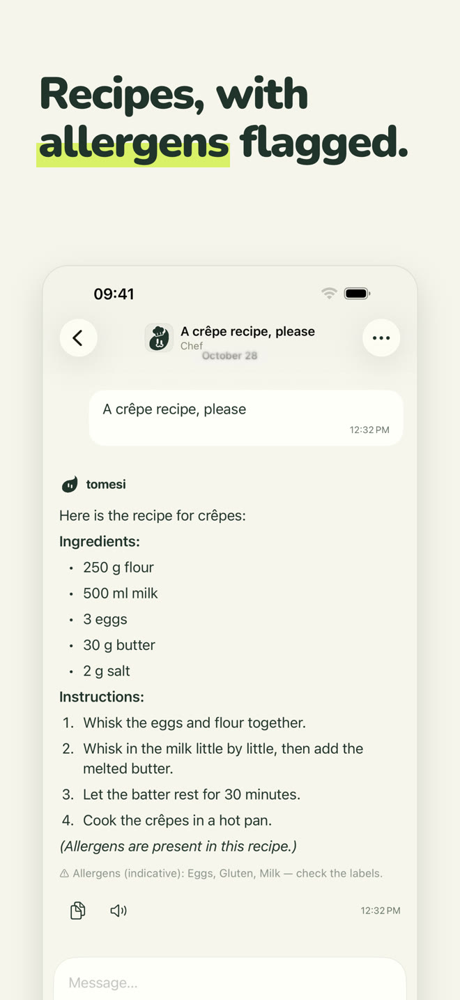
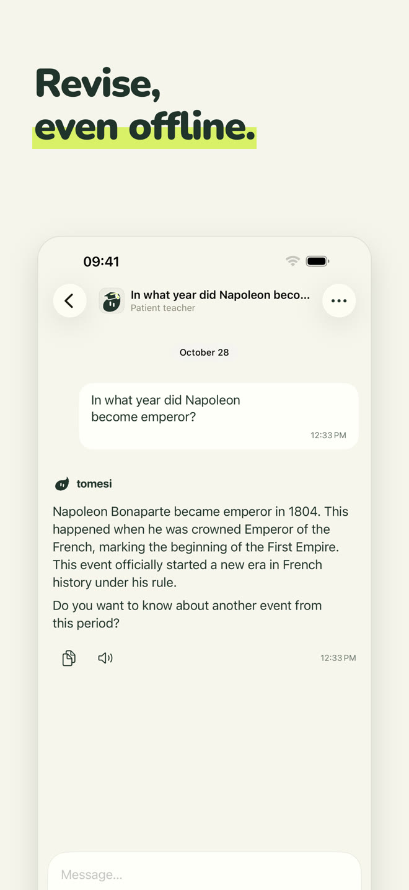
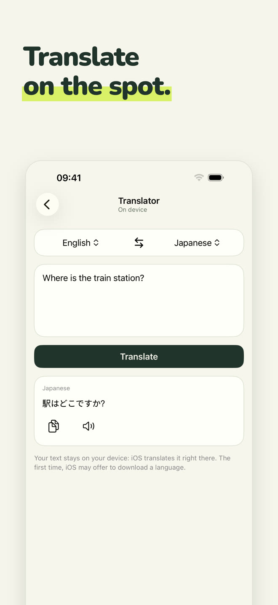
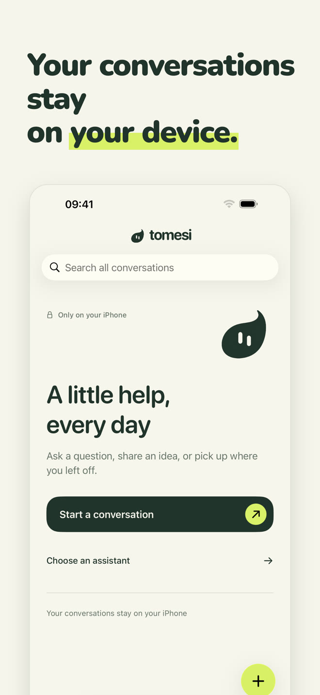
The AI is installed on your iPhone. What you write is never sent over the internet or stored anywhere but on your phone.
No sign-up, no email, no ads, no data collected.
No servers to pay for, so no subscription: the app is yours.
The optional Precision mode downloads a more capable model (about 3 GB) for answers that need more nuance.
Yes. Once the app and its assistant are installed, Tomesi no longer needs the internet: the AI runs entirely on your iPhone. You can check by turning on airplane mode.
Nowhere. They stay on your phone. Tomesi has no conversation server, no user account and no ads. See our privacy policy.
ChatGPT lives on servers: you need a connection, and your conversations go through them. Tomesi lives on your iPhone: less encyclopaedic than a cloud giant, but always available, fully private and subscription-free.
An iPhone with 8 GB of memory (iPhone 15 Pro or newer) running iOS 26 or later. Allow about 3 GB of free space, plus 3 GB for the optional Precision mode.
Yes, like any AI. The recipes, history dates and reference sheets built into the app are checked and given to the assistant, which greatly reduces errors, but always check important information.
Tomesi is available in 13 languages (English, French, German, Spanish, Italian, Dutch, Polish, Portuguese, Japanese, Korean, Simplified Chinese, Russian…) and the assistant understands and answers in even more.
Yes. MonIA is now called Tomesi. If you already bought it, there's nothing to buy again: just update, and your conversations stay on your phone.